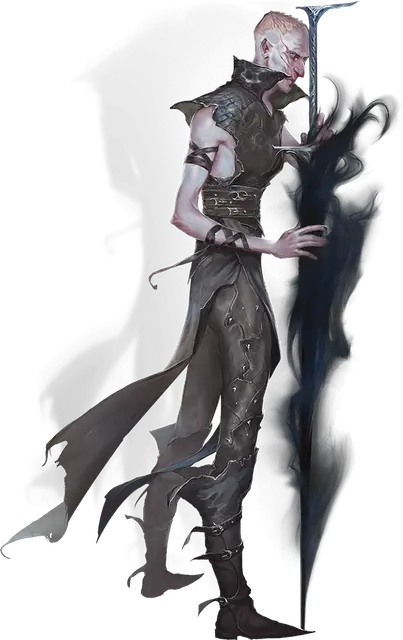

Сион
Sion
Средний Гуманоид (Человек, Чародей), нейтрально-злой, именной НИП

Класс Доспеха 12
Хиты 49 (9к8 + 9)
Скорость 30 футов
| мод | спас | ||
|---|---|---|---|
| СИЛ | 16 | +3 | +3 |
| ЛОВ | 14 | +2 | +2 |
| ТЕЛ | 13 | +1 | +3 |
| мод | спас | ||
|---|---|---|---|
| ИНТ | 12 | +1 | +1 |
| МДР | 14 | +2 | +2 |
| ХАР | 16 | +3 | +5 |
Навыки Восприятие +4, Магия +3, Скрытность +6
Чувства тёмное зрение 120 футов, пассивное Восприятие 14
Языки Общий
Опасность 2 (450 опыта)
Бонус мастерства +2
Особенности
Сопротивление магии. Сион совершает с преимуществом спасброски от заклинаний и прочих магических эффектов, пока находится в области тусклого света или темноты.
Теневой взор. Магическая тьма не мешает темному зрению Сиона.
Теневая гибель. Если Сион умирает, его тело сплавляется с тенью, оставляя после себя только снаряжение, которое он носил и нес.
Слабость на солнечном свете. Под солнечным светом Сион совершает с помехой броски атаки, проверки характеристик и спасброски.
Действия
Мультиатака. Сион совершает две атаки Теневым мечом, после чего применяет Теневой захват или Использование заклинаний.
Теневой меч. . Рукопашная атака оружием: +5 к попаданию, досягаемость 5 фт., одна цель. Попадание: 14 (2к10 + 3) урона некротической энергией.
Теневой захват. Сион выбирает целью видимое им в пределах 60 футов существо. Цель должна совершить спасбросок Харизмы Сл 13. При провале цель становится схваченной (Сл высвобождения 13) из-за того, что ее собственная тень сдавливает ее. Тень возвращается в норму сразу после того, как цель освобождается из захвата.
Использование заклинаний. Сион накладывает одно из следующих заклинаний, используя Харизму в качестве базовой характеристики (Сл спасброска 13):
• Неограниченно: волшебная рука [mage hand], малая иллюзия [minor illusion]
• 1/день каждое: тьма [darkness], отражения [mirror image], тишина [silence]
Бонусные действия
Теневой шаг. Пока Сион в тусклом свете или во тьме, он может магическим образом телепортироваться до 15 футов в незанятое место в тусклом свете или во тьме, которое он может видеть.
Описание
Сион является самым доверенным подручным Пьярца, мудреца-предателя в Небесной башне. Будучи изначально одним из хранителей башни, Сион демонстрировал врожденную склонность к магии. Пьярц убедил Сиона развивать свои мистические силы в тайне, и вскоре тот стал способным теневым чародеем. Он держал свои теневые чары в тайне от остальных обитателей башни. Тем не менее, все они заметили его горячую преданность Пьярцу и, по иронии судьбы, между собой называют его «тенью Пьярца».
Чародейство Сиона позволяет ему перемещаться между тенями и создавать теневые копии себя. Он даже способен частично управлять чужими тенями, заставляя их хватать своих хозяев, удерживая на месте. Куда бы Сион не направлялся, его повсюду сопровождают два питомца — злобная гончая и крупный ворон, помогающие Сиону в выслеживании врагов. Созданные им из чистой тени, оба существа используют блок характеристик тени [shadow], но у ворона также есть скорость полета в 40 футов.